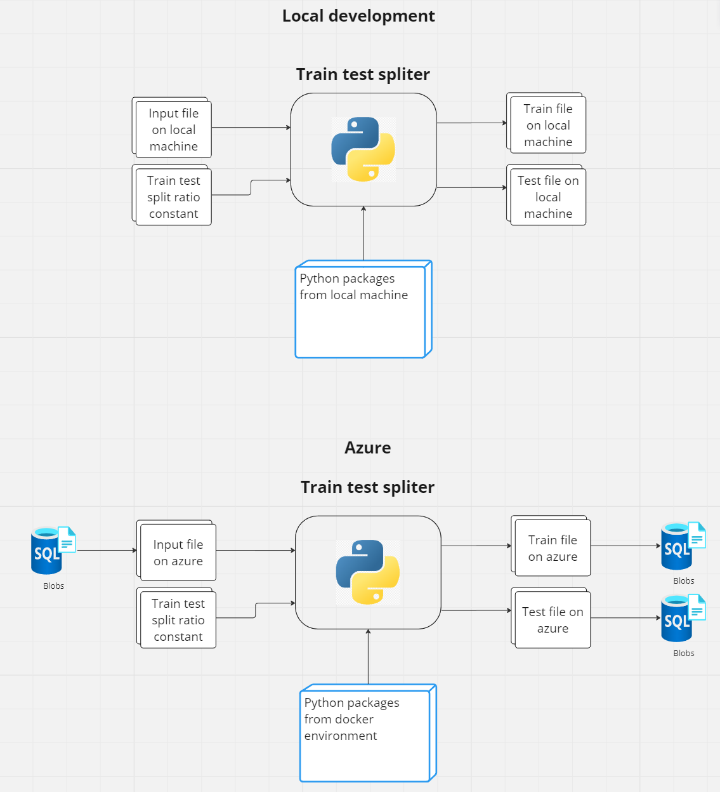
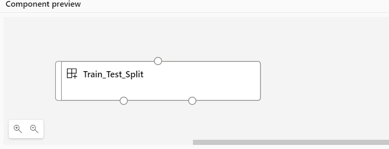

Component metadata#
The component metadata is a .yaml file file that contains the metadata for a component. The metadata is used by the component registry to display information about the component and to run it correctly in Azure.
Lets dive deeper into the train test spliter metadata file:
$schema: https://azuremlschemas.azureedge.net/latest/commandComponent.schema.json
type: command
name: train_test_split
display_name: Train_Test_Split
environment: azureml:AzureML-sklearn-1.0-ubuntu20.04-py38-cpu:1
inputs:
input_file_path:
type: uri_file
train_test_ratio:
type: number
default: 0.8
outputs:
train_data:
type: uri_file
test_data:
type: uri_file
command: >-
python component.py
--input_file_path ${{inputs.input_file_path}}
--training_data_path ${{outputs.train_data}}
--train_test_ratio ${{inputs.train_test_ratio}}
--test_data_path ${{outputs.test_data}}
The most important parts to know from this file is the inputs and outputs section. These inputs and outputs will be taken care of by Azure and inplace of uri_file or uri_folder, will contain paths in azure storage.
In azure, the command part will be executed in a docker container. The environment section specifies which docker container to use. The command line arguments will be prefiled with the inputs and outputs from the inputs and outputs section.
Thus, the schema is like this:

When azure runs the components, the variables
${{inputs.input_data}}
${{outputs.train_data}}
${{inputs.train_test_split}}
${{outputs.test_data}}
Get changed to the actual paths in azure storage or, for input types of number or string, the actual value we set it in azure.
Rendering in azure#
Now that we have component.py and run.yaml files, we can upload to azure.
We can do that by going to the machine learning studio -> components -> new component -> upload a component -> select the folder that contains the component.py and run.yaml files.
The component is rendered like:

The top buble represents the input to the component and the bottom two represent the outputs. The parameter train_test_ratio is a parameter that can be set in the component and is not rendered in the UI.